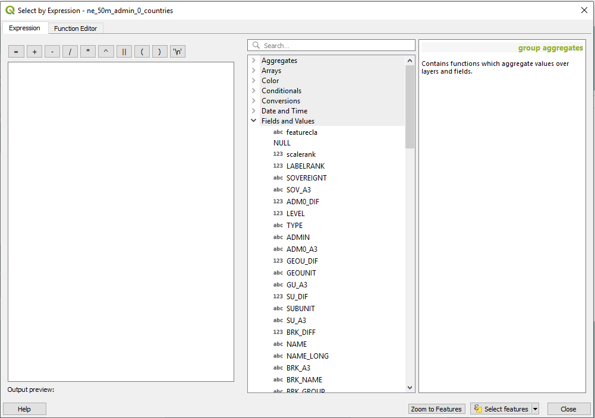
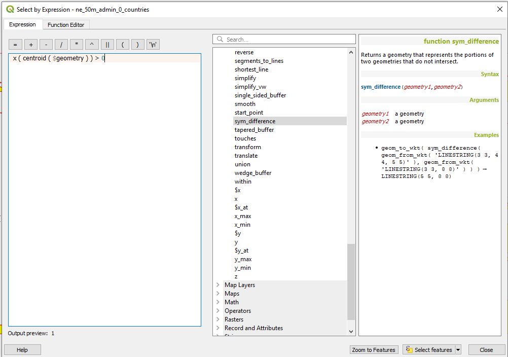
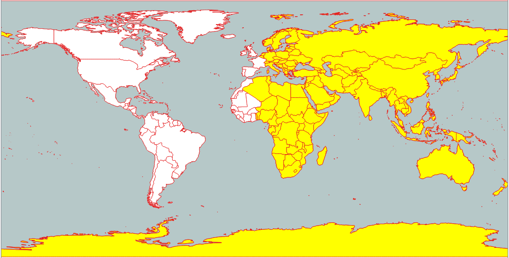

Select By Expression - Advanced Queries
Back To Basic ConceptsBack To Homepage
Notice - This tutorial assumes you are allready familiar with opening the attributes table and performing simple Select By Expression queries.
If your'e not, go back to:
Table Operations &
Select By Expression
For this tutorial i'll be using Natural Earth's Admin 0 Countries dataset again.
It displays the political boundaries of 242 countries in the world.
What we will be doing is performing spatial queries using the Select By Expression option in the attributes table
You can start the selection either by clicking the select by expression  icon from the toolbar,
or if it's not there look for the other selection methods and click the small down arrow next to the and the click it.
icon from the toolbar,
or if it's not there look for the other selection methods and click the small down arrow next to the and the click it.
 The other way is by accessing it is through the attribute table, which you can open by clicking it's icon
The other way is by accessing it is through the attribute table, which you can open by clicking it's icon  (F6)
(F6)
and then clicking the select by expression icon.
 This window should open up for you:
This window should open up for you:
 What we are going to do is select all the countries whose centroid is East of the Prime Meridian.
What we are going to do is select all the countries whose centroid is East of the Prime Meridian.
The query itself is not very complicated, we can deivide it into three stages:
- Getting every country's Geometry, This is done by calling it specificaly using $geometry
- Extracting their Centroid, with the centroid() function
- Checking if the centroid's X coordinate (Longitude),using the x() function, is smaller than 0.
 we then enter our expression which will be:
x ( centroid ( $geometry ) ) > 0 our window should now look like this:
 And our selection should look like this:
 What's wrong with France?!
Nothing, France has other territory outside of europe so it's centroid isn't contained within the main French border, if you perform a selection on France you will see it's a multipolygon with it's centroid somewhere in northern spain, just west of the prime meridian.
 Try exploring the other spatial and geometric functions available in the expressions window, they will come in handy with shortening processes.
Try exploring the other spatial and geometric functions available in the expressions window, they will come in handy with shortening processes.And thats it, Simple and easy to use, and now you know how to do that in Open Source. Go back to the top